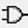
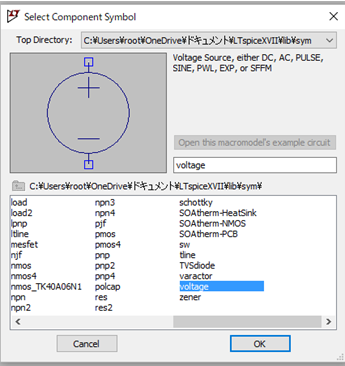
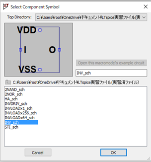
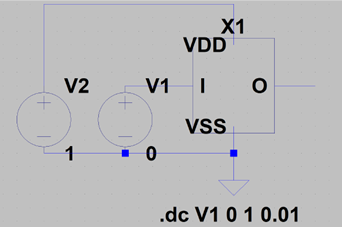
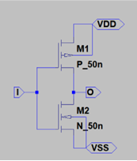
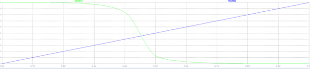

階層化された回路の利用 (Instance化)
階層化された回路の利用では、作成したシンボルを上位の回路に配置し、再利用するために Instance 化を行います。Instance 化により、回路の一部を別の回路で使いやすくし、回路全体の複雑さを軽減できます。
Instance 化の手順
1. 回路図へのシンボルの追加
新しい回路ファイルのオープン
まず、新しい回路ファイルを作成します。ツールバーの「New Schematic」アイコン を押して、新しい回路図を開きます。
シンボルの呼び出し
新しい回路図に、先に作成したシンボルを呼び出して配置します。ツールバーの「Select Component」アイコン  を押し、シンボル選択画面を表示させます。
シンボル選択
「Top Directory」をクリックすると、「ドキュメント \ LTspice 実習フォルダ」が表示されるので、そこを選択します。
保存されているシンボルを選択します。例えば、インバータの場合は「INV_sch」を、2NAND 回路の場合は「2NAND_sch」を選択します。
シンボルの配置
シンボルを選択したら、回路図上の任意の位置にシンボルをクリックして配置します。配置後、シンボルの入出力ピンが正しく接続できるように配線します。
2. Instance 化されたシンボルの接続
Instance 化されたシンボルは、通常の回路部品と同様に、配線ツールを使います。
結果がうまく出ない場合は、シンボルをダブルクリックして確認してみましょう。
もしダブルクリックしても回路図が表示されない場合は、保存時に失敗している可能性があります。この場合は、残念ながらシンボルを一から作り直す必要があります。
Instance 化のメリット
Instance 化により、回路の一部を再利用できるようになります。以下のメリットがあります。
1. 設計の効率化
一度作成した回路をシンボル化することで、複数の場所で再利用でき、回路設計が効率化されます。例えば、複数の AND ゲートやインバータを使用する際、一度作成したシンボルを何度も利用できるため、設計時間の短縮が期待できます。
2. 変更が容易
Instance 化された回路は、元のシンボルを修正することで一括して更新できます。これは、大規模な回路設計で非常に便利です。例えば、1つのシンボルに変更を加えた場合、そのシンボルを利用しているすべての回路にその変更が反映されます。
3. 構造の明確化
Instance 化を行うことで、回路図が整理され、視覚的に見やすくなります。複雑な回路でも、個々のシンボルに分けることで、回路全体の構造を明確に把握できるようになります。
Instance 化後のシミュレーション
Instance 化されたシンボルが正しく接続されていることを確認したら、回路全体のシミュレーションを実行します。シミュレーション結果は、個別に作成された回路の動作を組み合わせたものであり、シンボル内の回路動作が反映された形で出力されます。シミュレーションを通じて、階層化された回路の動作を確認しましょう。
